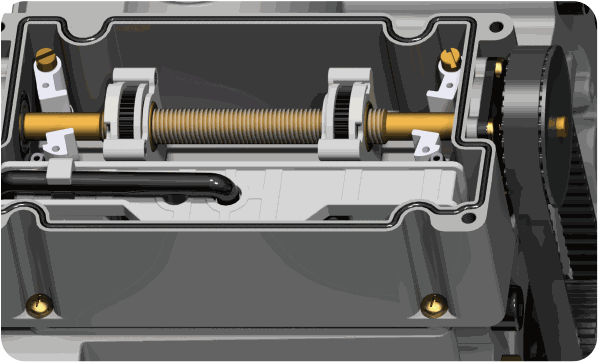
01
리미트 장치
열림·닫힘 한계 위치를 설정하고 설정 지점에서 모터를 정지시킵니다.
온실 천창의 랙·피니언 구동에 사용하는 고토크 전동개폐기입니다.
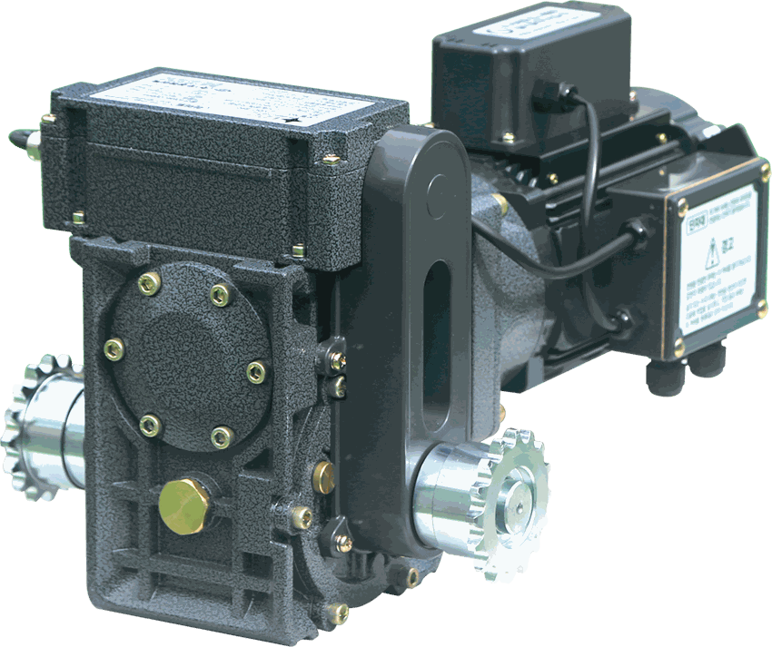
VDU-670은 735Nm, VDU-890은 955Nm의 강력한 토크로 온실 천창을 구동합니다. 무거운 천창을 안정적으로 개폐하는 데 유리합니다.
| 구분 | VDU-670 | VDU-890 |
|---|---|---|
| 정격전압 | AC380V 삼상 | AC380V 삼상 |
| 소비전류·출력 | 1A / 0.4kW | 1A / 0.4kW |
| 회전속도 | 2.6rpm | 2.0rpm |
| 토크 | 735Nm | 955Nm |
| 감속비 | 670:1 | 890:1 |
| 리미트 설정 | 0.5~37회전 | |
| 출력축·무게 | Ø24 / 16.8kg | |
| 최대 작동시간 | 연속 30분 | |
현장 운전 조건에 따라 선택하여 주문하는 구성입니다.
전원 차단 시 모터 축을 고정하여 환기창의 역회전을 억제합니다. 전자 브레이크 적용 여부와 제어반 호환성을 주문 전에 확인하십시오.
설치 공간과 축 위치를 검토하기 위한 외형 치수입니다.
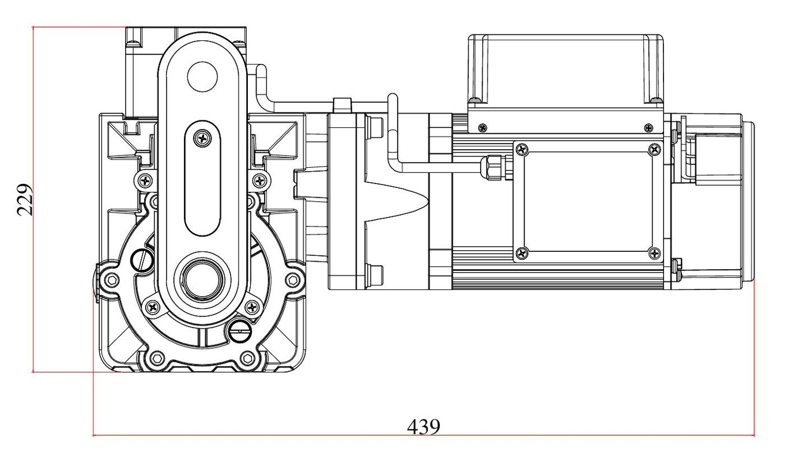
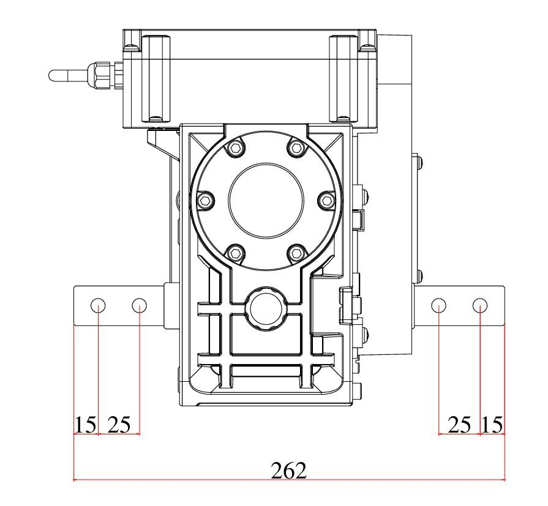
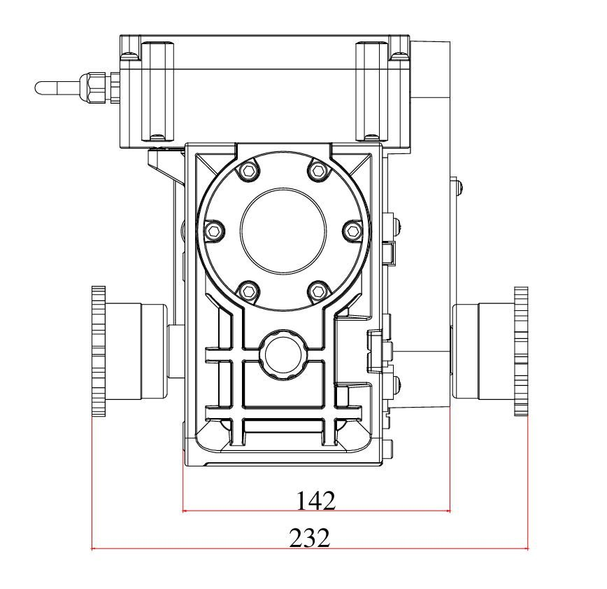
주요 장치의 위치와 기능을 고화질 제품 이미지로 확인합니다.
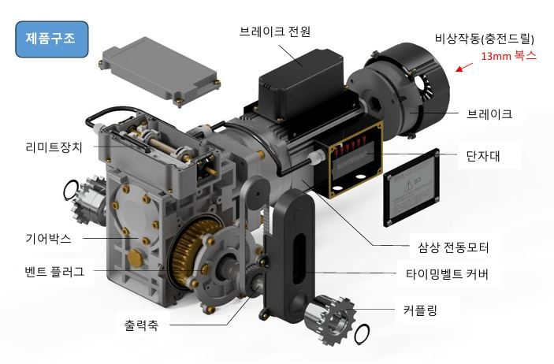

열림·닫힘 한계 위치를 설정하고 설정 지점에서 모터를 정지시킵니다.
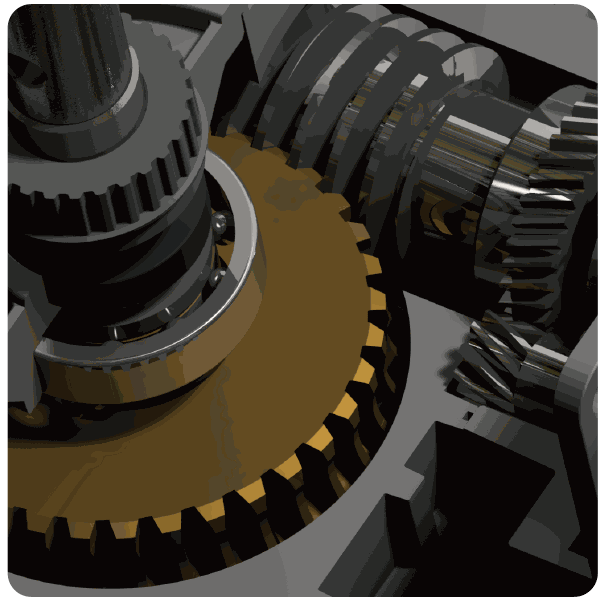
모터 회전력을 감속하여 높은 토크로 출력축에 전달합니다.
AC380V 삼상 0.4kW 모터가 기어박스를 구동합니다.
선택 적용 시 운전 중 해제되고 전원 차단 시 축을 고정합니다.
현장 구동축 구조에 맞는 방식을 선택합니다.
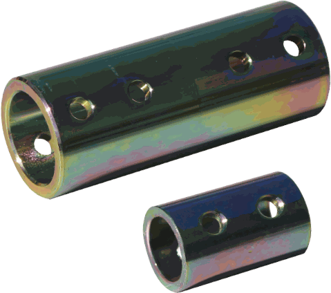
VDU와 구동축을 직접 연결합니다. 축 중심 정렬과 체결 상태가 특히 중요합니다.
직결 구조 · 간결한 구성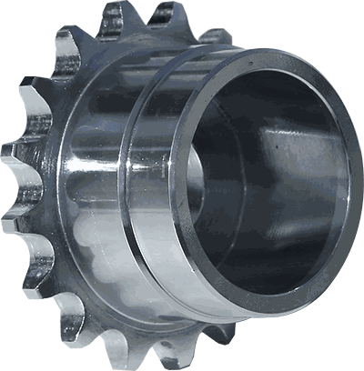
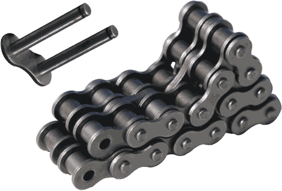
체인기어와 체인을 이용해 동력을 전달하며, 회전체에는 안전커버를 반드시 설치합니다.
체인기어 · 체인 · 스냅링 · 안전커버주문한 커플링 방식에 따라 실제 제공 부품이 달라질 수 있습니다.
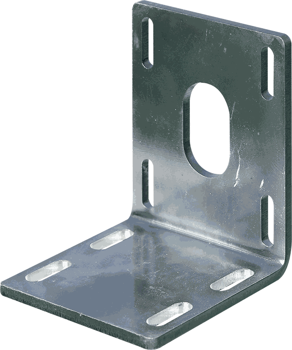
VDU 본체를 설치대에 고정
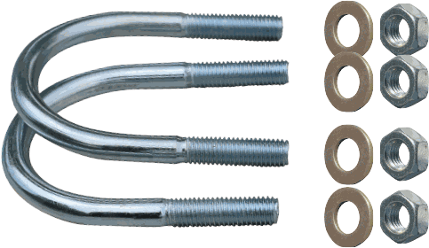
브라켓과 설치대 체결
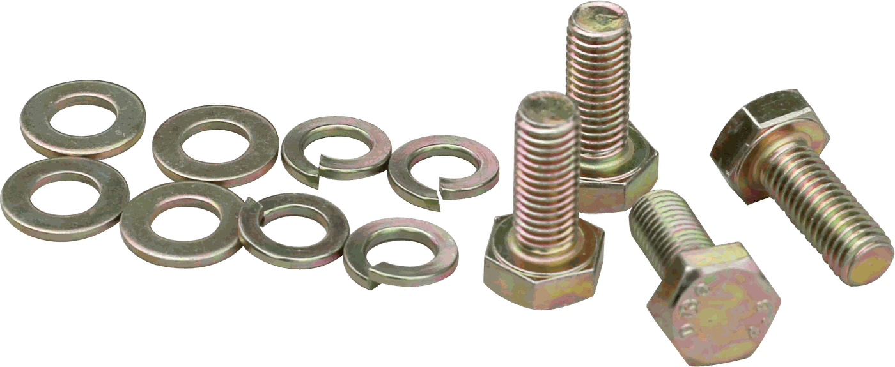
본체와 브라켓 체결
체인형 동력 전달
양쪽 체인기어 연결
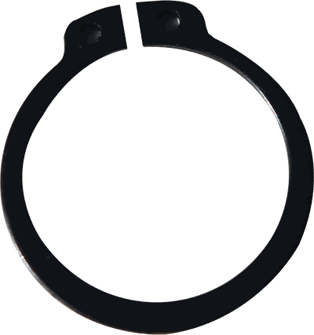
체인기어 이탈 방지
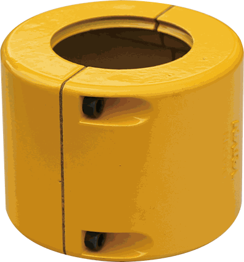
회전체 접촉 방지
구동축 직접 연결용
제품 선정부터 제어반·구조물까지 한 번에 확인해야 합니다.
시설 부하에 맞춰 VDU-670(735Nm) 또는 VDU-890(955Nm)을 선택합니다.
최대 토크가 발생해도 설치대가 흔들리거나 변형되지 않도록 보강합니다.
출력축과 구동축의 중심을 일치시키고 구동축의 휨·편심·간섭을 확인합니다.
전자 브레이크 옵션을 적용할 경우 AC380V 삼상 모터와 브레이크 전원을 함께 제어할 수 있는지 확인합니다.
모터 명판과 실제 운전전류에 맞는 과전류 보호장치를 전기 전문가가 선정·설정합니다.
환기창 전체 이동 구간에서 걸림, 과도한 밀폐 압력, 프레임 비틀림이 없는지 확인합니다.
과전류 보호장치는 모터 회로의 과부하를 감지하는 장치이며 시설 프레임의 변형을 직접 방지하지는 않습니다. 기존 제어반 설정을 그대로 사용하지 말고, 반복 차단 시 원인을 확인하기 전까지 재가동하거나 보호장치를 임의로 변경하지 마십시오.
온실 구조에 따라 설치 위치와 구동축 구성이 달라질 수 있습니다.
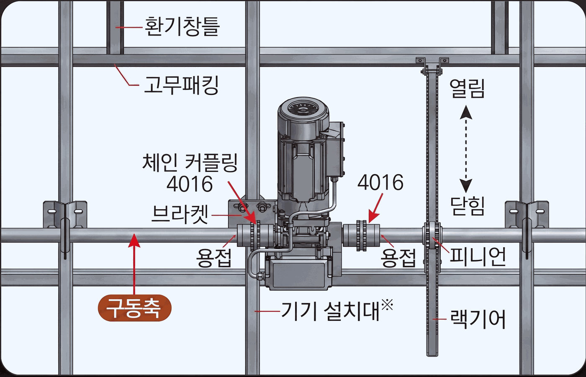
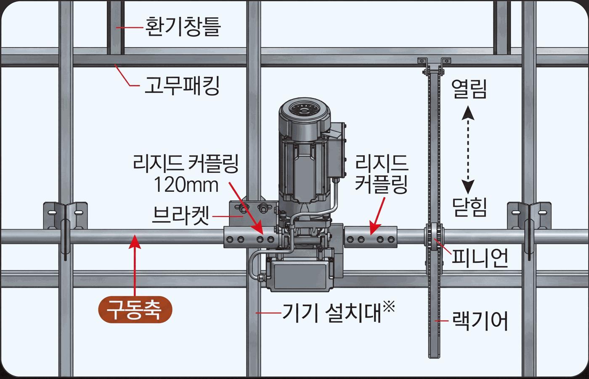
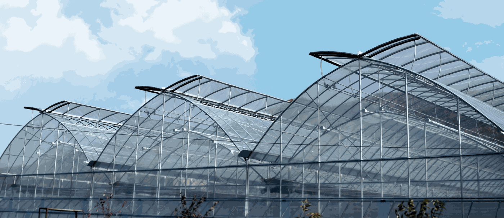
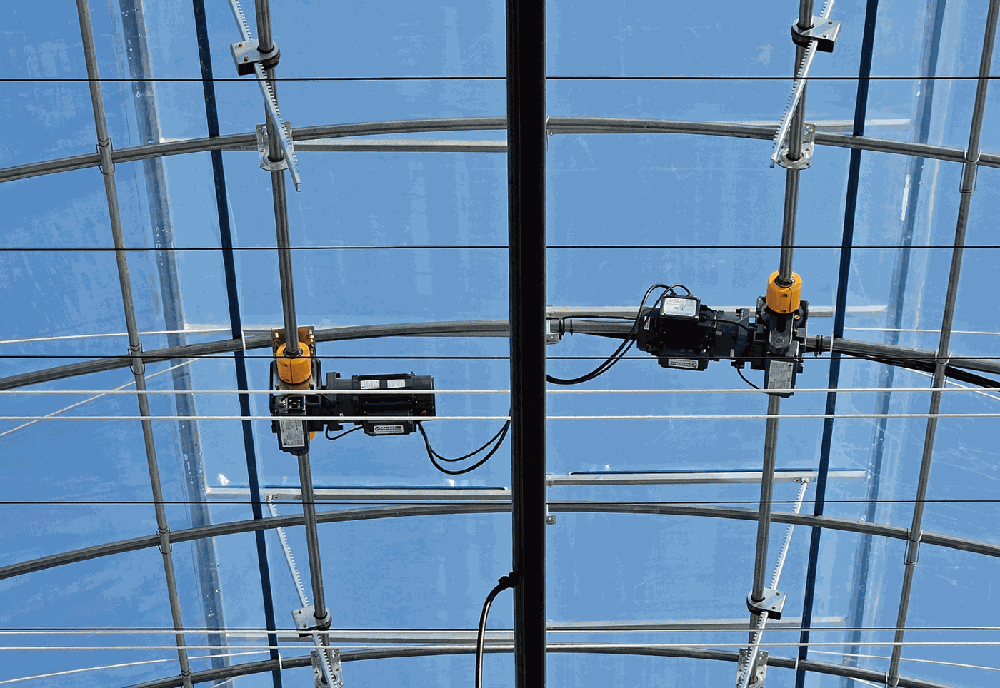
현장 구성에 맞춰 VDU를 수동 운전하고 모터 회로를 보호합니다.
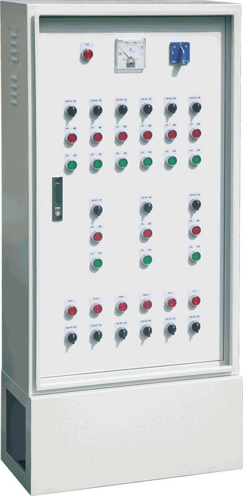
VDU 수량과 운전 구역, 자동 연동 조건에 맞춰 제어반을 구성합니다.
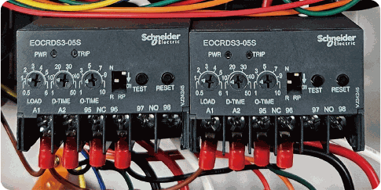
보호 설정 확인설치 후 실제 운전전류와 설정값 기록